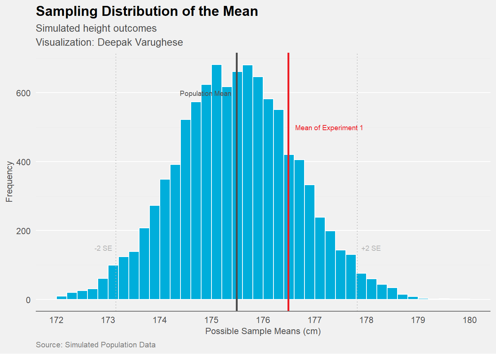

ID_Number | Height_cm |
|---|---|
P-001 | 183.0 |
P-002 | 180.2 |
P-003 | 194.9 |
P-004 | 182.3 |
P-005 | 181.8 |
P-006 | 175.3 |
P-007 | 174.9 |
P-008 | 185.6 |
P-009 | 171.8 |
P-010 | 171.1 |
P-011 | 169.3 |
P-012 | 173.9 |
P-013 | 169.1 |
P-014 | 177.2 |
P-015 | 175.1 |
P-016 | 177.2 |
P-017 | 181.3 |
P-018 | 169.7 |
P-019 | 180.6 |
P-020 | 182.5 |
P-021 | 185.2 |
P-022 | 184.2 |
P-023 | 181.8 |
P-024 | 169.8 |
P-025 | 165.0 |
P-026 | 167.3 |
P-027 | 171.0 |
P-028 | 179.9 |
P-029 | 168.9 |
P-030 | 174.8 |
P-031 | 176.0 |
P-032 | 175.8 |
P-033 | 182.2 |
P-034 | 176.6 |
P-035 | 191.7 |
P-036 | 180.0 |
P-037 | 167.1 |
P-038 | 171.2 |
P-039 | 178.1 |
P-040 | 156.0 |
Sampling Distribution of the Mean
Experiment 1
Objective : To estimate the mean height of a population using a sample.
Assume we have a scenario where we want to know the height of all males from age 20 to 30 in a particular city. The country has more than 800 males in that age group. We only have resources to measure the height of 40 people.
Can we use the height of these 40 people to somehow estimate what the average height of the 800 people could be? This is the question that inferential statistics tries to answer.
A “sample” is a subset of data from a larger population. A population in statistics is a large , defined (but sometimes theoretical or imaginary) set of data.
When we sample data and try to infer the properties of a population we are faced with 2 key considerations?
- Who do we sample? Can we ask the first 40 people we meet? Should we use some sort of criteria? How do we find the “right” 40 people to ask? - To answer this we need to delve into the idea of “Sampling methods”. We need to use the correct sampling method so that we have a sample that is representative of the population.
- If we do measure the height of 40 people , how does the mean of this sample compare with the true mean of the whole population? How can we use the height of 40 people to estimate the height of 800? To answer this we need to delve into the idea of Inferential Statistics.
Random Sampling is a process in which each available member of the population being sampled has an equal chance of being chosen for the sample at each draw. The sample that results is called a “simple random sample”. The population can also be divided into “strata” based on common characteristics and then sampling from each strata. This is called “Stratified Random Sampling”.
Data Quality can matter more than Data Quanity while making an estimate based on a sample. Data Quality refers to the completeness, consistency of format, cleanliness , accuracy and representativeness of the data. A sample has to be representative of the population it comes from. Only then can any inferences drawn from a sample be useful.
Let us try to calculate the average height in the group.
Sample Mean height: 176.49 cmSample SD: 7.46 cmNow that we can see that the average height of people in this sample is 176.49
Are we sure that the true mean in the population (the value we really want to know) will be exactly this number? Unlikely? Can it be close to this number? How do we resolve this?
Experiment 2
repeat the same experiment.
Take another 40 people.
Calculate the mean of the second sample
These are the results you find
ID_Number
Height_cm
P-041
183.0
P-042
180.2
P-043
194.9
P-044
182.3
P-045
181.8
P-046
175.3
P-047
174.9
P-048
185.6
P-049
171.8
P-050
171.1
P-051
169.3
P-052
173.9
P-053
169.1
P-054
177.2
P-055
175.1
P-056
177.2
P-057
181.3
P-058
169.7
P-059
180.6
P-060
182.5
P-061
185.2
P-062
184.2
P-063
181.8
P-064
169.8
P-065
165.0
P-066
167.3
P-067
171.0
P-068
179.9
P-069
168.9
P-070
174.8
P-071
176.0
P-072
175.8
P-073
182.2
P-074
176.6
P-075
191.7
P-076
180.0
P-077
167.1
P-078
171.2
P-079
178.1
P-080
156.0
Sample Mean height of second set of values: 173.71 cmSample SD: 7.46 cm
Now we see when we repeat the experiment we got a value of 173.71 which is different from the 176.49 in the first example. Now how do we interpret this? Is the mean of the population likely to be higher? or lower? Let us repeat one more time.
Experiment 3
Repeat the same experiment a third time.
Measure the height of another 40 people.
Calculate the mean of the third sample
ID_Number | Height_cm |
|---|---|
P-081 | 180.4 |
P-082 | 185.7 |
P-083 | 178.2 |
P-084 | 188.8 |
P-085 | 170.0 |
P-086 | 171.6 |
P-087 | 181.0 |
P-088 | 166.5 |
P-089 | 169.4 |
P-090 | 189.0 |
P-091 | 173.6 |
P-092 | 176.3 |
P-093 | 170.8 |
P-094 | 177.8 |
P-095 | 176.7 |
P-096 | 171.4 |
P-097 | 184.6 |
P-098 | 171.8 |
P-099 | 178.0 |
P-100 | 183.9 |
P-101 | 162.0 |
P-102 | 183.5 |
P-103 | 174.5 |
P-104 | 164.9 |
P-105 | 180.1 |
P-106 | 155.7 |
P-107 | 177.6 |
P-108 | 162.8 |
P-109 | 186.9 |
P-110 | 183.4 |
P-111 | 168.4 |
P-112 | 175.7 |
P-113 | 176.9 |
P-114 | 163.2 |
P-115 | 170.5 |
P-116 | 184.0 |
P-117 | 183.5 |
P-118 | 171.2 |
P-119 | 177.1 |
P-120 | 165.9 |
Sample Mean height of third set of values: 175.33 cmSample SD: 8.04 cmNow we have repeated the experiment a third time and got a third mean. This is also a similar number but different. What can we do to solve this.
The solution we often apply in statistics is to create a new dataset that contains the means of each of these experiments. This would look something like this.
Table containing the mean from each repetition of the experiment.
| Experiment | Mean Height |
|---|---|
| Experiment 1 | 176.71 |
| Experiment 2 | 173.71 |
| Experiment 3 | 175.33 |
| ……….. | …………. |
| Experiment “n” | 173.55 |
A genuine drawback of this method would be a very practical one. One would usually not have the money and resources to repeat the experiment any number of times.
However, if one were to do it, and repeat the experiment “n” number of times then plot the means of each experiment as a histogram , you would likely get a figure like this.

This brings us to an important concept of the SAMPLING DISTRIBUTION.
: Note that the Sampling Distribution is very different from the “Sample Distribution”. It does not refer to the data in the sample. It refers to the mean of a collection of means if that same experiment was repeated n number of times. A “Mean of Means”. This is an important distinction to make.
What is the Sampling Distribution of the Mean.
Sampling Distribution of the mean
Distribution from when the same experiment is (hypothetically) repeated n number of times and the mean is collected from each experiment and then plotted as a histogram.
We have to now make a very important distinction, with another similar sounding entity which is the “Sample Distribution” .
Sample Distribution
- Distribution of the individual data points present in a single sample taken from the population .
-
Please make the clear distinction that the “Sampling Distribution of the Mean” is a very different entity from a “Sample Distribution”.
In Data Science we generally consider that the mean of the sampling distribution will be the true mean of the distribution from which the sample was taken. Hence it is called the Population Mean.
Some Observations from the above figure
- Notice how the value of our first experiment is near to the population mean but not exactly the population mean.
- Notice that the distribution of the means (sampling distribution) is also normally distributed. This property of the sampling distribution (provided the right conditions) to take a normal distribution as the number of sample means increase, even if the underlying data distribution of the sample is not normal is called the “Central Limit Theorem”. It is often described when the number of sample means is greater than 30.
- Notice the lines analogous to the standard deviation in this sampling distribution. While the dispersion in a sample distribution of data is measured in standard deviation, a similar entity for the Sampling Distribution is called the Standard Error.
- The distance between -2 and +2 Standard Errors is sometimes referred to as a 95% Confindence Interval.
- Some Caveats
-
It is often assumed that data points in large samples are “normally distributed”. This is infact not true. Most data points from samples are not necessarily normally distributed. Other distributions like the t-distribution are far more common. It is infact the Sampling Distribution that is often (but not always) normally distributed. The Central Limit Theorem is built on many assumptions that are often violated in the real world. Hence the applicability of the CLT is not universal. We can discuss this further in future tutorials.
The above scenario is obviously hypothetical. In the real world we cannot afford to do our experiment >30 times to derive the population mean, standard error and confidence intervals. In the next tutorial we will see how we can estimate the values using just one sample and the power of statistics.